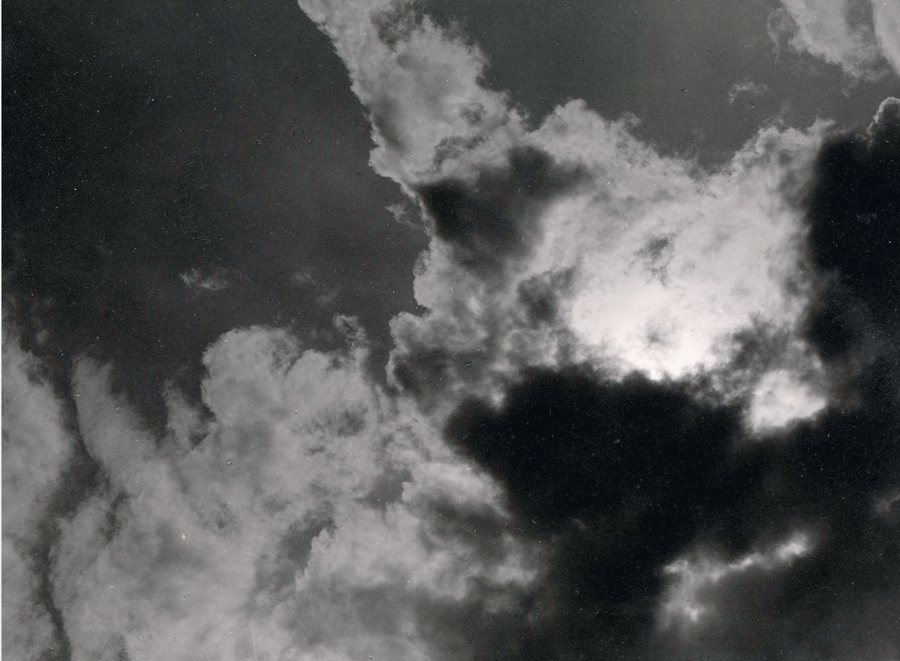
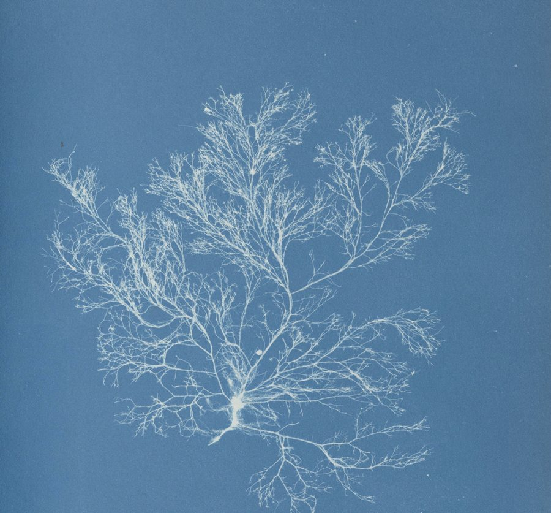
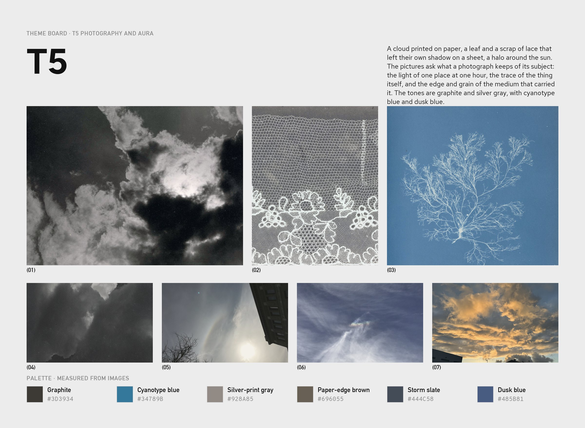

Photography and aura
Photography and the question of aura. Benjamin argued that reproduction strips a work of its here and now; Stieglitz and Sally Mann answer with prints whose surface, process and accident carry presence back into the copy. With McLuhan, the theme asks what a surface keeps when it is reproduced.



Overall mood
A cloud printed on paper, a leaf or a scrap of lace that left its own shadow on a sheet, a halo around the sun. The pictures ask what a photograph keeps of its subject: the light of one place at one hour, the trace of the thing itself, and the edge and grain of the medium that carried it. The tones are graphite and silver gray, with cyanotype blue and dusk blue. Light is soft and the subjects are quiet: sky, plant, thread.


Definition and test
- Concept
- Aura: "the sense of distance and uniqueness attached to an original work in a specific time and place. Benjamin argues mechanical reproduction weakens it.".
- Test
- What is lost and what is gained when this is reproduced? Evidence of: presence.
- Reading for images
- A photograph cannot show presence, only the marks of how it was made: the print edge, the grain, the light, the contact with the thing. The board shows those and leaves the loss or gain to the story.
Motifs
Each motif is taken from a sentence in the sources above.
| # | Motif | Theory sentence it comes from | Images |
|---|---|---|---|
| 01 | The sky as equivalent: a cloud with no ground, a mood made of light | "unique presence ... in a specific time and place"; Stieglitz named in the research (his Equivalents are cloud studies) | (01), (04) |
| 02 | The print made by the thing: lace and alga leave their own shadow on a sheet | "What is lost and what is gained when this is reproduced?": contact printing is reproduction that keeps a trace of the original | (02), (03) |
| 03 | Light and the medium's mark: halo, rainbow patch, the edge of the print | "sense of distance"; McLuhan named in the research (the medium itself) | (05), (06) |
Motif 02 is strong in precedent but shows reproduction, not aura. Sally Mann (wet-plate collodion, family portraits) has no image: her work is rights-reserved and mostly portraits with faces, so none was used.
Counter-case
It is the same subject as (01) and (04), but saturated and phone-processed, the kind of sunset that is easy to make and to repeat.
Color direction
No. The test concerns presence and reproduction, not appearance. The palette below is measured from the seven images and describes this board only; it is not a proposal for the color library. Cyanotype blue is a historical process color, not a theme color.